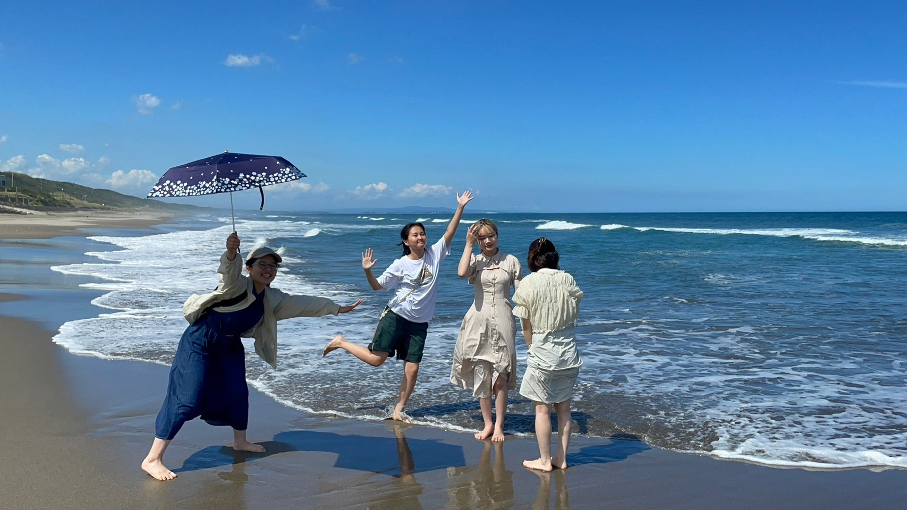
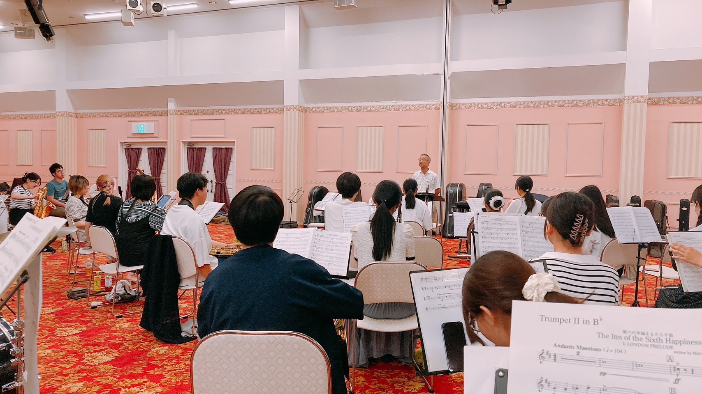

活動報告
全日本吹奏楽コンクール東関東大会に出場しました。
2023年9月17日 よこすか芸術劇場にて開催されました全日本吹奏楽コンクール東関東大会に出場し、銀賞を受賞しました。
惜しくも銀賞となりましたが、この経験を生かしてより精進いたしますので今後とも当団をよろしくお願いいたします。
演奏曲
・課題曲Ⅲ レトロ 天野正道作曲
・自由曲 交響曲第2番「黄金時代」 アッペルモント作曲

夏合宿を行いました！
8月25日～8月27日に茨城県鉾田市で夏合宿を行いました！
合宿では全日本吹奏楽コンクール東関東大会に向けた練習のほかに、12月17日に開催される冬のコンサートの音だしなどを行いました。
練習の合間には海に遊びに行ったり、レク大会をしたり、、、夏の思い出ができました！

全日本吹奏楽コンクール茨城県大会にて 金賞＆朝日賞 を受賞しました！
2023年8月13日に開催されました全日本吹奏楽コンクール茨城県大会に出場し、金賞と朝日賞を受賞し、東関東大会に出場することが決定しました！
演奏曲
・課題曲Ⅲ レトロ 天野正道作曲
・自由曲 交響曲第2番「黄金時代」 アッペルモント作曲
全日本吹奏楽コンクール東関東大会は、2023年9月17日(日) よこすか芸術劇場にて開催されます。